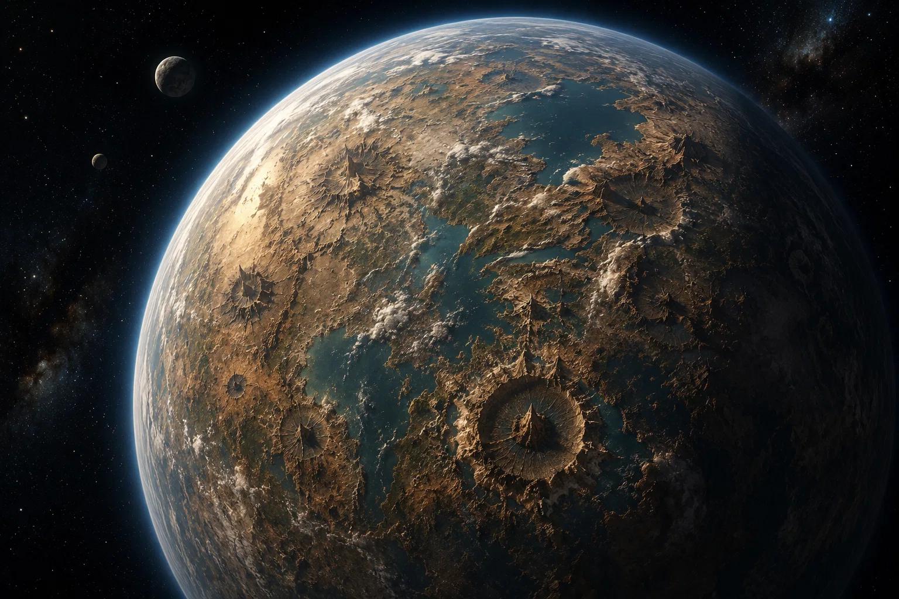

¿Qué diferencia a este universo del principal?
Universo principal · 000
En la cronología principal, los planetas independientes forman una coalición para proteger su autonomía frente a los imperios y las amenazas externas.
Universo 001
La asamblea fundacional fracasa cuando los mundos más poderosos rechazan compartir recursos y mando militar. La Unión de Planetas Independientes nunca llega a constituirse.
Historia
La asamblea que debía reunir a los planetas independientes acaba dividida por las mismas diferencias que pretendía superar. Los representantes regresan a sus mundos sin un compromiso de defensa mutua. Los dirigentes más influyentes celebran haber conservado el control de sus flotas y recursos; los planetas pequeños entienden que, ante una invasión, no habrá nadie obligado a acudir en su ayuda.
La ruptura no provoca un único desastre, sino incontables decisiones tomadas en soledad. Un gobierno cede sus rutas comerciales a cambio de protección; otro fortifica los accesos a su sistema y rechaza toda nave desconocida. Los comerciantes aprenden a cruzar fronteras con permisos distintos y las comunidades alejadas descubren que recibir noticias de un vecino puede ser tan difícil como recibir sus refuerzos.
Gobiernos y alianzas

No existe una capital galáctica ni una autoridad capaz de hablar en nombre de los mundos libres. Algunos planetas forman pequeñas ligas defensivas; otros prefieren firmar acuerdos privados con las potencias de su entorno. Cada tratado tiene sus propias condiciones y puede romperse cuando cambian los intereses de un gobernante.
Los embajadores se vuelven tan importantes como los militares. Una negociación sobre combustible, una estación de reparaciones o el paso de un convoy puede decidir el destino de toda una población. La diplomacia consiste menos en defender ideales comunes que en conseguir aliados suficientes para sobrevivir a la siguiente crisis.
La vida en las fronteras
Las regiones más alejadas de los grandes centros comerciales viven bajo la amenaza constante de saqueadores y ejércitos oportunistas. Los asentamientos conservan reservas de emergencia, rutas de evacuación y señales de alarma que transmiten entre colonias vecinas. Viajar deja de ser una simple cuestión de distancia: importa quién controla cada paso y a qué bando pertenece.
Aun así, la ausencia de una gran organización también permite que florezcan culturas y formas de gobierno muy distintas. Hay mundos que abren sus puertos a cualquiera que necesite refugio y otros que no permiten entrar a extranjeros. La libertad, en esta realidad, es una conquista cotidiana que no todos pueden ejercer del mismo modo.
Las redes de ayuda mutua
Entre las colonias aparecen organizaciones de pilotos, médicos, mecánicos y mensajeros que se niegan a esperar la autorización de sus gobiernos para ayudarse. Transportan suministros a lugares sitiados, esconden refugiados en cargueros comerciales y comparten información sobre movimientos militares. Nadie los considera un ejército, pero sus rutas llegan donde las flotas oficiales no se atreven a entrar.
Su mayor dificultad es la confianza. Algunas autoridades sospechan de estos grupos porque cruzan fronteras sin permiso; otras intentan utilizarlos para sus propios fines. Los integrantes de la red saben que perder una sola estación de abastecimiento puede dejar incomunicados a varios mundos, por lo que su resistencia depende tanto de la discreción como de la valentía.
Potencias y amenazas
Los grandes imperios encuentran una galaxia fragmentada. En vez de enfrentarse a una flota conjunta, pueden presionar a cada sistema con ultimátums diferentes. Algunas conquistas se consuman sin disparar un arma: basta con imponer un tratado desigual sobre un planeta que no tiene aliados.
Sin embargo, la fragmentación también dificulta el dominio absoluto. No hay un único gobierno que pueda rendirse en nombre de todos. Los movimientos de resistencia surgen en lugares inesperados y las invasiones se enfrentan a territorios que conocen mejor sus habitantes que los conquistadores.
La situación de la galaxia
Una nueva generación de representantes comienza a reunirse en secreto para compartir mapas de amenazas, rutas seguras y reservas de emergencia. No están de acuerdo en fundar otra gran Unión: algunos temen repetir la disputa que arruinó el primer intento y otros se niegan a entregar autoridad a un consejo lejano.
Su propuesta es más pequeña y más difícil de destruir: compromisos concretos entre mundos vecinos, sin promesas de poder absoluto. Todavía no saben si esa red bastará para protegerlos, pero por primera vez la colaboración empieza a parecer una elección posible y no una imposición.